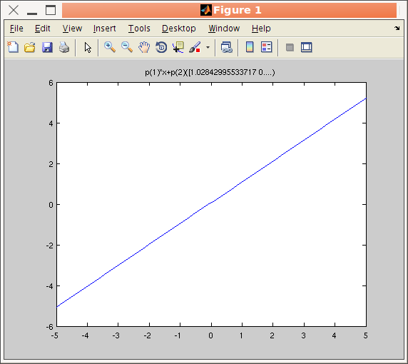
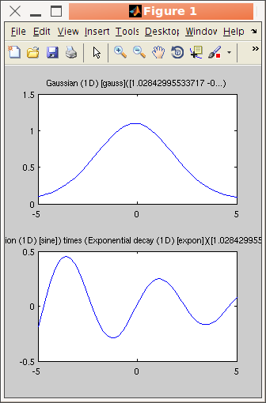

>> a=iFunc('p(1)*x+p(2)')Any expression can be entered, and an analysis of the parameters results in default parameter names.
a = iFunc 1D model:
[Tag] [Dim] [Model] [Parameters 'p']
iF193482 1 p(1)*x+p(2) signal = p(1)*x+p(.. Amplitude Constant
>> a=iFunc('a=p(1); b=p(2); signal=a*x+b'); % same as above
>> iFunc(iData('filename'))
will create a data set object and derive a model out of it.>> disp(a)A graphical representation of the model is obtained using the plot method.
a = iFunc 1D model:
Expression: signal = p(1)*x+p(2);
Tag: 'iF193482'
Date: '17-Jul-2012 10:49:50'
Name: ' p(1)*x+p(2)'
Parameters: {'Amplitude' 'Constant'}
Dimension: 1
ParameterValues: []
UserData: ''
Parameters:
p( 1)= Amplitude
p( 2)= Constant
>> plot(a)
>> get(a, 'Expression')The Expression can be a character string returning the 'signal' as a function of the parameters 'p' and axes x,y,z,t,u,v,w
>> a.Expression
ans =
signal = p(1)*x+p(2);
>> a=iFunc(@(p,x)p(1)*x+p(2))
Additional arguments (above the model dimensionality) are usable in
the Expression as 'varargin' cell.
>> a.Parameters = {'Slope','Constant'}
The ParameterValues
property holds the last parameter values (e.g. when returned from a
fit or a function evaluation).>> a=iFunc('p(1)*x+p(2)')Last, it is possible to define an empty iFunc object, and fill it with Parameters and any Expression, even without actually any mathematical model:
>> char(a)
>> cellstr(a)
>> a=iFunc;This way, it is possible to define any Matlab function inside an iFunc object. The cell 'varargin' then contains the arguments 2-end, while 'p' contains the first argument.
>> a.Parameters={'Amplitude','Width'}
>> a.Expression=[ '[ varargin{:} ]' ];
>> a(1,2,3)
ans =
2 3
Parameters from a model can be accessed in many equivalent ways.
If 'a' is an iFunc model
:
>> a.Parameters % lists all parameter names
>> get(a) % display the model description, with the list of parameter names and last evaluated values
>> a.p % returns a vector of parameter values
>> a.ParameterValues % same as above, last evaluated parameter values
If, for instance, the model has an 'Slope' parameter, you can get specifically
its value with :
>> a.Slope % display the value of the 'Slope' parameter
Alternatively, it is possible to modify parameter values :
>> a.p(1) = 2;
>> a.Slope = 2;
>> edit(iFunc)
Refer to the dedicated help on this topic in
the Models page, which also lists
pre-defined models (Gaussian, Lorentzian, exponential, lines,
quadratic, ...). Edit their code to see how to define new models:>> edit gauss % edit the function definition (from a file)When no parameter value is known, some guessed values are estimated from the analysis of the model value and expression.
>> edit voigt
>> edit(voig) % edit the object definition
>> plot([gauss lorz])
>> subplot([gauss sine.*expon]) % use unary and binary operators, see below
>> signal = feval(gauss, [ 1 0 .1 0])In this case, tentative axes are computed from the model definition. Axes can also be passed as additional arguments for x,y,z,... either as separate arguments, as a cell array {x,y,...}, as a structure, or as an iData object which axes are used.
>> gauss([ 1 0 .1 0]) % same as above: evaluate model
>> feval(gauss, [ 1 0 .1 0], linspace(-5,5, 100) ) >> gauss([ 1 0 .1 0], linspace(-5,5, 100) ) % same as above: evaluate modelWhen used together with iData objects, the iFunc models can either return their evaluation (array), or be converted into an iData object for easier further handling.
>> iD = iData(linspace(-5,5, 100), zeros(1,100)); % define a zero iData object with some axesA faster calling syntax for the same result is:
>> g = gauss; % a Gaussian model
>> g([ 1 0 .1 0], iD) % evaluate model with axes in the iData object
>> iD(g, [1 0 .1 0]) % evaluate model into a new iData object
>> g=gauss;It is also possible to evaluate the model while scanning parameters. To achieve that, the parameter values must be given as a named structure, or as a string such as 'Intensity=[ .5 1 1.5 2 ];'
>> iData(g, [1 0 .1 0], linspace(-5,5, 100), zeros(1,100)) % evaluate model into a new iData object
model = gauss1;
p.Intensity= [ .5:.25:2 ]; % from 0.5 to 2 by steps of .25
v=iData(model, p); % evaluate as iData sets. To only get the values, use feval(model,p)
plot(cat(2,v)); % plot the scan as a surface
>> model.parameter='fix' % to lock its value during a fit process. Same as mlockAny parameter name surrounded by double quotes, e.g. "Amplitude", is replaced by the corresponding p(n) value in an expression used for setting a parameter value (cross-constraints). For instance
>> model.parameter='clear' % or 'free' to unlock value during a fit process. Same as munlock >> model.parameter=[min max] % to bound value
>> model.parameter=[min value max] % to bound the parameter and set its value
>> model.parameter=[nan nan] % to remove bound constraint
>> model.parameter='' % to remove all constraints on 'parameter'
>> model.parameter='expression' % to set the parameter from an expression which can use 'p(n)' for other parameters
>> model.Constraint='' % to remove all constraints
>> model.Constraint = 0; % to unlock/free all Parameters during a fit process
>> model.Constraint = 1; % to lock/fix all Parameters during a fit process
>> f=gauss; % create a Gaussian modelAlternatively, you can use the mlock, munlock and xlim methods:
>> f.Amplitude = 'fix'; % fix its Amplitude
>> f.Background = [0 1e-4]; % bound its background
>> f.Width = 'p(1)/1000'; % use an expression referring to p(1)=Amplitude value
>> f.Width = '"Amplitude"/1000'; % same as above with direct naming of parameters using ""
>> mlock(f, {'Amplitude','Background'}) % fix these 2 parameters, same as setting parameters to 'fix'Last, you can fix/clear/bound parameters based on a regular expression search such as:
>> munlock(f, 'Background') % unlock that parameter, same as f.Background='clear'
>> xlim(f, 'Background', [0 1e-3]) % force parameter within range, same as f.Background=[min max]
>> xlim(f, 'Background', []) % remove limits constraint
>> mlock(f, regexp(f.Parameters, 'Amplitude|Background'})where we have used the '|' OR operator.
>> mlock(f)which return the number of parameters in each category. This is also displayed when using:
>> munlock(f)
>> xlim(f)
>> disp(f)
Under the hood, the constraints are stored as a structure with
fields min, max, fixed, set
(with one expression per parameter), and eval (to be evaluated before the object
Expression).Once you have created an manipulated a model, it is possible to
export it into a file so that you can re-use it latter. To do so,
use saveas(object, ...)
similarly as when saving iData objects. 'save' is equivalent to saveas.
>> a=iFunc('p(1)*x+p(2)') + gauss ;
>> saveas(a); % save as a Matlab m-file function, file name is automatically set to the model iD
>> saveas(a, '', 'mat') % same, with a 'mat' file
>> save(a, 'model.mat') % same, with a 'mat' file, specifying the file name
The supported export formats are [ as listed with saveas(iFunc,'formats') ]:
DAT Flat text file with comments (*.dat)
EPS Encapsulated PostScript (color, *.eps)
FIG Matlab figure (*.fig)
HDF4;H4 Hierarchical Data Format 4 image (*.hdf4)
HTML;HTM Hypertext Markup Language document (*.html)
JPG JPEG image (*.jpg)
JSON JSON JavaScript Object Notation (*.json)
M Matlab script/function (*.m)
MAT Matlab binary file (*.mat)
PDF Portable Document Format (*.pdf)
PNG Portable Network Graphics image (*.png)
PS PostScript (color, *.ps)
TIFF;TIF TIFF image (*.tif)
XML XML file (*.xml)
YAML;YML YAML interchange format (*.yaml)
We recommend to save iFunc models as MAT files, or m-files or YAML.
To load back an m or mat file into memory for
re-use:
| Unary
operators |
abs char del2 floor sparse
transpose acos conj full sqrt uminus acosh
real asin exp ndims round xcorr asinh imag
norm atan cos isempty not sign tan atanh cosh
fliplr log sin tanh ceil ctranspose flipud log10
plus(+) sinh minus(-) |
| Binary
operators |
mtimes(*) times (.*)
mpower(^) power(.^) mrdivide(/) rdivide(./) conv convn |
| Other operators |
edit plot char copyobj doc
feval fits get set subplot conv convn xcorr save saveas |
>> methods iFunc
The element-wise times(.*), divide(./) and power(.^) operators apply
the operation along the model dimensions, with parallel axes.
>> a = gauss + lorz; % additionIn binary operations, passing one of the arguments as a string will simply insert the corresponding code into the model Expression as the argument to the operator. For instance the following statement appends a zero value vector to the gauss model value (axes are x,y,z,... and parameters values are in p):
>> b = gauss * lorz; % orthogonal axes multiplication 2x 1D -> 2D
>> c = gauss .* lorz; % parallel axes multiplication
>> c.Constraint = 'p(8) = 0;'; % avoid having two Background parameters
>> subplot([a b c])
>> c = gauss + 'zeros(size(x))'
>> c = gauss + 'signal = signal + zeros(size(x));'; % add code after the Expression (append)Last, when using a single word character string as one of the arguments to a binary operation, a constant Parameter is used, for instance :
>> c = 'disp(''Gaussian comming'');'+ gauss; % add code before the Expression (prepend)
>> c = gauss + 'Background' % add a new Background parameterYou can also use the convolution related operators
>> c = gauss + constant('Background') % same as above
>> c = gauss + constant % same as above, but not naming explicitly the new Constant >> d = gauss.*'Amplitude' + 'Background' % add 2 new constant Parameters
>> a = convn(lorz, 3) % convolution of a Lorentzian with a Gaussian of width 3Methods generally mimic the Matlab default ones in functionality, and are also similar to those of the iData objects (see the Methods page).
>> a = convn(lorz, gauss) % a Voigt function...
>> a = convn(lorz, 'double(b)'); a.Constraint = 'global b'; % convolute with a global variable 'b'
>> p = fmin(model)
will use some guessed axes and automatic optimizer choice for the
optimisation. To start the optimization for a given initial
parameter set, use:>> p = fmin(model, starting_pars)
The starting parameters can be given as a vector, structure or
string such as 'Intensity=1' as
explained above.>> p = fmin(model, starting_pars, options, x,y, ...)
Just as detailed in the Optimizers
documentation, you may specify the 'options' as the name of the
optimizer (then using its default configuration), a string, or a
structure, such as in the following examples:>> p = fmin(model, starting_pars, 'fminpso')By default, the axes to use for the evaluation will be guessed. In order to explicitly specify the axes to use, add them after the options:
>> p = fmin(model, starting_pars, 'optimizer=fminpso; OutputFcn=fminplot; Display=iter')
>> p = fmin(model, starting_pars, 'optimizer=fminpso; OutputFcn=fminplot; Display=iter', x,y, ...)
In all cases, it is strongly advised
to fix the non-relevant parameters, and bound the others, as
explained above.>> model= gauss1;will search for the intensity that minimizes a Gaussian. This is of course the lower Intensity bound, other parameters being fixed.
>> fix(model, 'all'); model.Intensity='free';
>> model.Intensity=1; model.HalfWidth=.5;
>> xlim(model, 'Intensity',[-2 2])
>> fmin(model)
ans =
-2.0000 0 0.5000
>> fmin(model, 'Intensity=1')
ans =
Intensity: -2
>> model= gauss1;
>> fix(model, 'all'); model.Intensity='free';
>> model.Intensity=1; model.HalfWidth=.5;
>> xlim(model, 'Intensity',[-2 2])
>> fmax(model)
ans =
1.9995 0 0.5000
>> p = fits(model, data, starting_parameters, options, constraints, ...)
The data can be given as an iData object,
a vector/matrix, >> data=load(iData, [ ifitpath 'Data/sv1850.scn' ])or with a specific optmiser choice:
>> p=fits(data); % fit to a gaussian
>> [p,c,m,o]=fits(gauss,data,[],'optimizer=fminpowell; OutputFcn=fminplot');The model value when the fit procedure ends is stored in the output.modelValue member :
>> [parameters,criteria,message,output]= fits(model, data, initial_parameters,...)which is an iData object when data is given as an iData. In this case, fits(iFunc, iData, ...) is equivalent to fits(iData, iFunc, ...), and you can directly plot the result on top of the initial data with:
>> plot(data, output.modelValue)When the data to be fitted is not an iData object, you can plot the fit result from e.g.
>> plot(output.modelAxes,output.modelValue) % 1D
>> surf(output.modelAxes{:},output.modelValue) % 2D